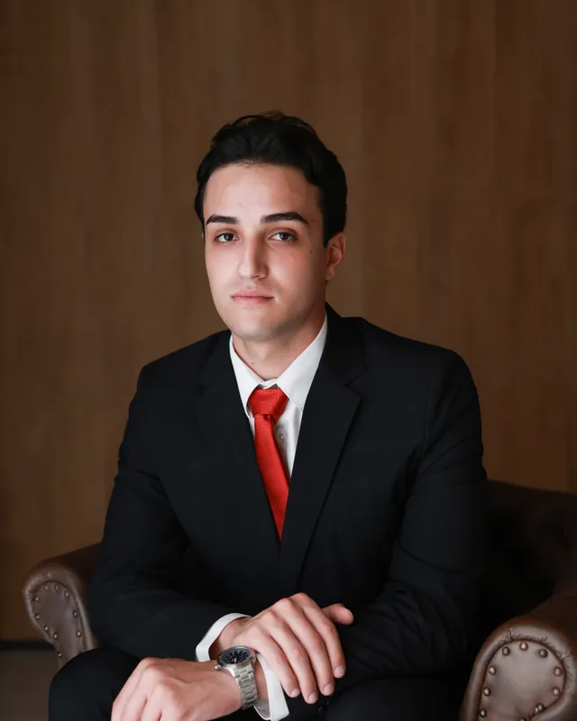

A defesa começa antes do processo.
Atuação criminal do inquérito ao plenário, com linguagem clara e acompanhamento direto do advogado em cada etapa.

Dr. Luan Monteiro ToffoliOAB/RS 143.060 · Advogado criminalistaO que defendemos.
Da fase de investigação à execução da pena.
Inquérito policial
Intimações, depoimentos e investigações.Prisão em flagrante e custódia
As primeiras horas, quando a defesa mais pesa.Tribunal do Júri
Crimes contra a vida, do preparo ao plenário.Crimes contra a administração pública
Corrupção, fraudes em licitações e delitos praticados por agentes públicos.Defesa penal empresarial e compliance
Assessoria e defesa estratégica de empresas e sócios em investigações, crimes licitatórios e infrações penais.Crimes patrimoniais e econômicos
Furto, roubo, estelionato e delitos empresariais.Lei de Drogas
Tráfico, associação e posse para uso.Violência doméstica
Defesa nos processos da Lei Maria da Penha.Execução penal
Progressão de regime, livramento e benefícios.Recursos e habeas corpus
Revisão de decisões em segunda instância e tribunais superiores.Ninguém será considerado culpado até o trânsito em julgado de sentença penal condenatória.
CF, art. 5º, LVIIDefender é garantir que essa regra seja cumprida.
Você sabe o que acontece, antes de acontecer.
Escuta e sigilo
Ouvimos o que aconteceu, sem julgamento. Tudo fica protegido pelo sigilo profissional.
Leitura dos autos
Estudo técnico de cada folha: provas, prazos e a versão da acusação.
Estratégia de defesa
Definimos o caminho possível e explicamos riscos e alternativas, sem promessas.
Acompanhamento
Você é informado de cada movimento relevante, em linguagem clara.
Dr. Luan Monteiro Toffoli
Advocacia criminal voltada para a defesa intransigente de direitos e garantias fundamentais. Unindo capacidade técnica rigorosa a uma profunda experiência prévia no serviço público, o escritório oferece uma leitura precisa e estratégica de investigações e processos penais, com forte atuação em crimes contra a administração pública e em demandas complexas do direito penal. Uma advocacia transparente, séria e comprometida com a realidade de cada cliente em todas as fases do processo.
Informação clara, sem pressa.
Guias informativos, em linguagem clara, para cada fase.
O que você precisa saber.
A primeira conversa é sigilosa?
Sim. A comunicação entre advogado e cliente é protegida pelo sigilo profissional previsto no Estatuto da Advocacia.
Vocês garantem resultado?
Não. Nenhum advogado pode prometer resultado. Oferecemos estudo técnico do caso, defesa diligente e informação honesta sobre os riscos.
Posso falar pelo WhatsApp?
Sim, para o primeiro contato. Evite enviar documentos e detalhes sigilosos até conversarmos e combinarmos o melhor canal.
Preciso de advogado já na delegacia?
A Constituição garante a quem é preso a assistência de advogado e o direito de permanecer calado. Em caso de dúvida, fale com um advogado antes de prestar depoimento.
Vamos conversar.
Falamos pelo canal que você preferir. A primeira conversa é sigilosa.
Ou comece pela sua situação
Outros canais
Na primeira mensagem, diga seu nome, sua cidade e se há alguém preso.